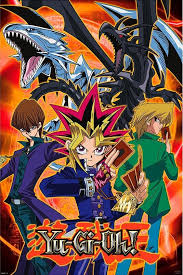

Yu-gi-oh est originellement un manga créé par le japonais Kazuki Takahashi en 1996 dans lequel les personnages combattent lors de duels de cartes Yu-gi-oh.
Le succès a été tel que le jeu à été reproduit dans la vrai vie. Le but est simple: réduire les points de vie de son adversaire à 0. Pour cela, il faudra vous aider des trois types de cartes du jeu: les monstres, les pièges et les cartes magie afin de remporter chacun de vos duels. Pour ceux qui veulent apprendre à jouer: